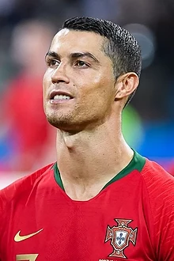

Best player on the World
Cristiano Ronaldo dos Santos Aveiro GOIH ComM ( born 5 February 1985) is a Portuguese professional footballer who plays as a forward for Premier League club Manchester United and captains the Portugal national team. Widely regarded as one of the greatest players of all time, Ronaldo has won five Ballon d'Or awards and four European Golden Shoes, the most by a European player. He has won 32 trophies in his career, including seven league titles, five UEFA Champions Leagues, and the UEFA European Championship. Ronaldo holds the records for most appearances (183), goals (140), and assists (42) in the Champions League, goals in the European Championship (14), international goals (117), and international appearances by a European (191). He is one of the few players to have made over 1,100 professional career appearances, and has scored over 800 official senior career goals for club and country. Ronaldo began his senior career with Sporting CP, before signing with Manchester United in 2003, aged 18, winning the FA Cup in his first season. He would also go on to win three consecutive Premier League titles, the Champions League and the FIFA Club World Cup; at age 23, he won his first Ballon d'Or. Ronaldo was the subject of the then-most expensive association football transfer when he signed for Real Madrid in 2009 in a transfer worth €94 million (£80 million), where he won 15 trophies, including two La Liga titles, two Copa del Rey, and four Champions Leagues, and became the club's all-time top goalscorer. He won back-to-back Ballons d'Or in 2013 and 2014, and again in 2016 and 2017, and was runner-up three times behind Lionel Messi, his perceived career rival. In 2018, he signed for Juventus in a transfer worth an initial €100 million (£88 million), the most expensive transfer for an Italian club and for a player over 30 years old. He won two Serie A titles, two Supercoppe Italiana, and a Coppa Italia, before returning to Manchester United in 2021. Ronaldo made his international debut for Portugal in 2003 at the age of 18 and has since earned over 190 caps, making him Portugal's most-capped player. With more than 100 goals at international level, he is also the nation's all-time top goalscorer. Ronaldo has played in and scored at 11 major tournaments; he scored his first international goal at Euro 2004, where he helped Portugal reach the final. He assumed captaincy of the national team in July 2008. In 2015, Ronaldo was named the best Portuguese player of all time by the Portuguese Football Federation. The following year, he led Portugal to their first major tournament title at Euro 2016, and received the Silver Boot as the second-highest goalscorer of the tournament. He also led them to victory in the inaugural UEFA Nations League in 2019, and later received the Golden Boot as top scorer of Euro 2020. One of the world's most marketable and famous athletes, Ronaldo was ranked the world's highest-paid athlete by Forbes in 2016 and 2017 and the world's most famous athlete by ESPN from 2016 to 2019. Time included him on their list of the 100 most influential people in the world in 2014. He is the first footballer and the third sportsman to earn US$1 billion in his career.